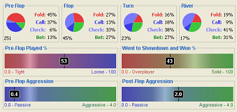
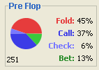
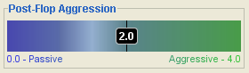

The Actions tab graphically shows information about the selected player's actions over the selected sessions. The upper portion of the tab breaks down the player's action frequencies by each Texas Hold'em round: Pre-Flop, Flop, Turn and River. The lower portion of the tab shows four other key statistics for the selected player on graphical scales: Pre-Flop Played %, Went to Showdown and Won %, Pre-Flop Aggression, and Post-Flop Aggression.

The Action Frequencies By Stage portion of the Actions tab graphically shows how often a player takes each type of action in each stage of the game. This information is shown using four pie charts with associated percentages for each stage in Texas Hold'em: Pre-Flop, Flop, Turn, and River.
Each pie chart is color-coded to show frequencies for each of the four action frequencies tracked. Fold is shown in red, Call in dark blue, Check in light blue, and Bet in green. The relative size of each colored section in the pie represents the percentage of time the selected player has taken that action in the selected sessions. These percentages are also listed explicitly beside each pie chart.
If a pie chart is an empty circle, then that means that the selected player has never made an action on that stage in the selected sessions. When this happens, the percentages shown with each action are shown as being "n/a" (i.e. not available).
In the bottom left corner of each stage's frequency information is a number that is used to indicate how often a player reaches that particular stage in the game. In the Pre-Flop panel, the number represents the number of hands dealt. In the three other Post-Flop panels (flop, turn, and river), the number in the corner represents the percentage of time that player went to that stage. It is important to note that during all-ins a player can reach a stage but not actually get to make an action there.
The frequency information presented here is useful when trying to identify patterns in a player's betting habits. For example, this information is useful if you want to see if a player is calling too much on the flop only to fold on the turn.

The lower portion of the Actions tab graphically presents some key statistics for the selected player as observed in the selected sessions. For each key statistic, there is a graphical scale that represents a valid range for the value of that statistic. The selected player's value for that statistic is shown as value inside the scale.
To make it easier to interpret the graphical scale, they are colored in a specific manner to draw your attention to different areas. Each extreme end of the scale is colored a specific color and a gradient is used blur the two colors together as they approach one another. Somewhere within the scale, there will be a white highlighted region that is distinctly bright at some point and fades out to the extreme colors. This white highlighted region is meant to indicate a suggested range where the player's actual value should be situated.
It is important to note that the accuracy of these stats, as with all stats, will have more significance as more hands are played. Also note, analyzing these stats across different game types (number of players, types of players, betting type (e.g. limit or no limit), and game type (e.g. ring or tournament)) may produce poor statistical significance.
These graphical scales are useful to use when you want to compare different players to try and identify which characteristics are important for making players winners or losers.
The key statistics shown are as follows: